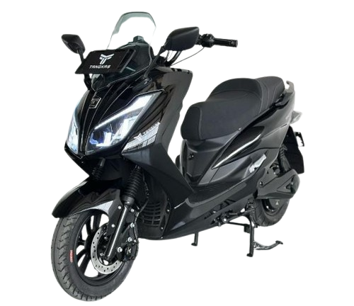
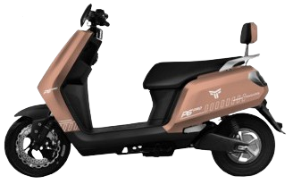
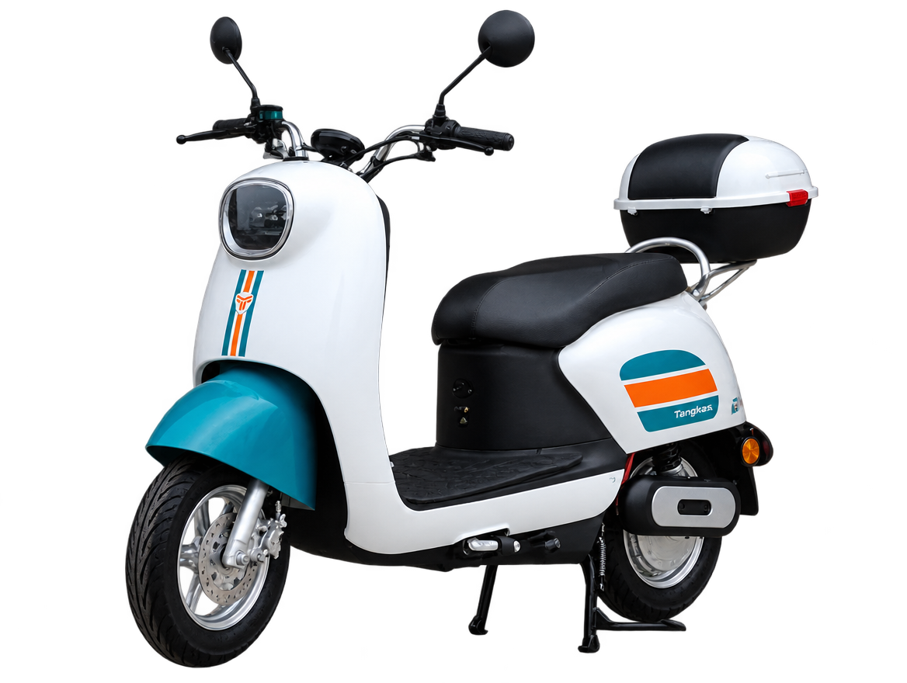

V8 Max
Varian tercantum pada halaman produk dan kategori SLA E-Katalog. Grafis spesifikasi belum berhasil diverifikasi; tanyakan data terbaru kepada Tangkas.
Pilihan motor / Tangkas
Spesifikasi yang bisa dibaca, dibandingkan, dan ditelusuri sumbernya—per varian, bukan per gambar promosi.
Motor listrik
Pilih berdasarkan baterai dan kebutuhan perjalanan. Angka di bawah berasal dari grafis produk Tangkas. Jarak tempuh adalah klaim pada materi, bukan hasil yang dijamin di setiap kondisi.
| Model | Baterai | Motor | Kecepatan maks. | Jarak klaim | Rem | Beban |
|---|---|---|---|---|---|---|
| X7 NewSLA | 72V / 32Ah | 2.000 W | 55 km/jam | 80 km | Double disc | 200 kg |
| X7 NewLithium LFP | 72V / 48Ah | 4.000 W | 95 km/jam | 100–120 km | Double disc | 200 kg |
| P6 ProSLA | 72V / 32Ah | 2.000 W | 70 km/jam | 80 km | Disc | 200 kg |
| P6 ProLithium LFP | 72V / 48Ah | 2.000 W | 70 km/jam | 100–120 km | Double disc | 200 kg |
| E6 BoxSLA | 72V / 20Ah | 1.200 W | 45 km/jam | 80–100 km | Disc + tromol | 200 kg |
| V8 NewGraphene | 60V / 22,3Ah | 1.000 W | 55 km/jam | Belum tercantum | Disc depan/belakang | 150 kg |
X7 dan P6 juga mencantumkan alarm, port USB, fungsi mundur, serta status registrasi STNK pada materi produk. Detail fitur mengikuti varian dan perlu dicek pada unit yang dijual.



Lebih dari tiga pilihan
Halaman produk dan E-Katalog Tangkas juga memuat V8 Max, kendaraan khusus, roda tiga, serta sepeda listrik. Status model lama dan nama varian perlu diperiksa sebelum dijadikan daftar jual aktif.
Varian tercantum pada halaman produk dan kategori SLA E-Katalog. Grafis spesifikasi belum berhasil diverifikasi; tanyakan data terbaru kepada Tangkas.
Konfigurasi khusus yang tercantum pada E-Katalog. Penggunaan, perangkat, dan harga mengikuti permintaan serta dokumen penawaran.
Materi lama mencantumkan baterai Graphene 48V / 22,8Ah, motor 650 W, kecepatan sekitar 35 km/jam dan jarak sekitar 50 km. Status stok perlu konfirmasi.
New SL7, SL8, Primo dan Pilar terdapat di halaman lama. Materi proposal lebih baru menyebut SL8 New, PRIMO X dan PILAR X. Nama dan ketersediaan untuk 2026 perlu daftar resmi.
Harga / layanan
Harga akhir dapat berbeda menurut wilayah, baterai, stok, dan promosi. Minta penawaran tertulis dari showroom untuk varian yang benar.
Angka berikut adalah arsip dari materi produk yang dirangkum dalam riset, bukan penawaran atau harga 2026.
| Model | Baterai | Harga pada materi |
|---|---|---|
| X7 New | SLA | Rp23.300.000 |
| X7 New | Lithium LFP | Rp33.000.000 |
| P6 Pro | SLA | Rp16.800.000 |
| P6 Pro | Lithium LFP | Rp28.800.000 |
| E6 Box | SLA | Rp14.500.000 |
| V8 New | Graphene | Rp13.600.000 |
Langkah berikutnya
Bandingkan model, pilih cabang, lalu tanyakan ketersediaan unit dan test ride.
Sumber: Produk Kami · E-Katalog resmi. Data spesifikasi dan harga perlu verifikasi Tangkas sebelum peluncuran publik.